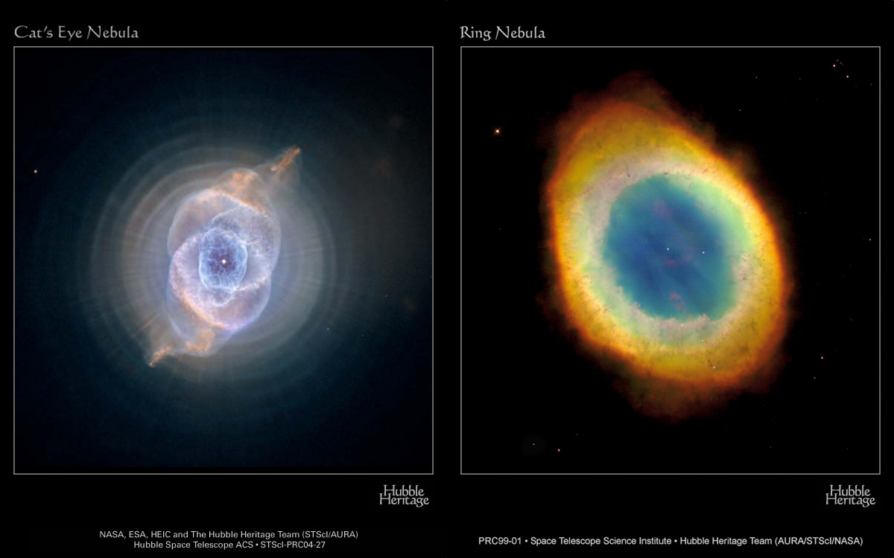
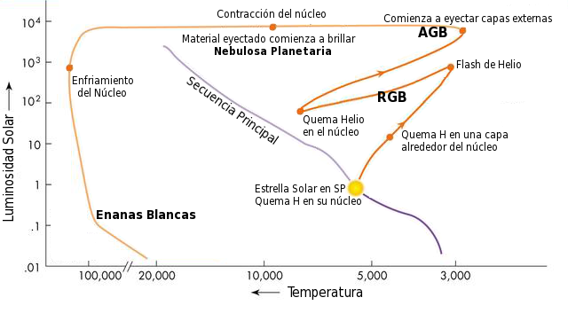
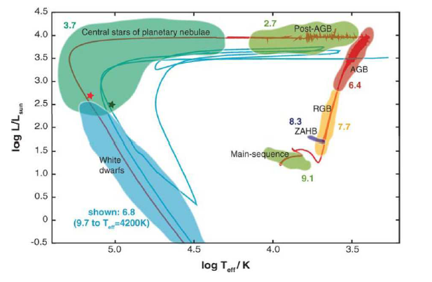
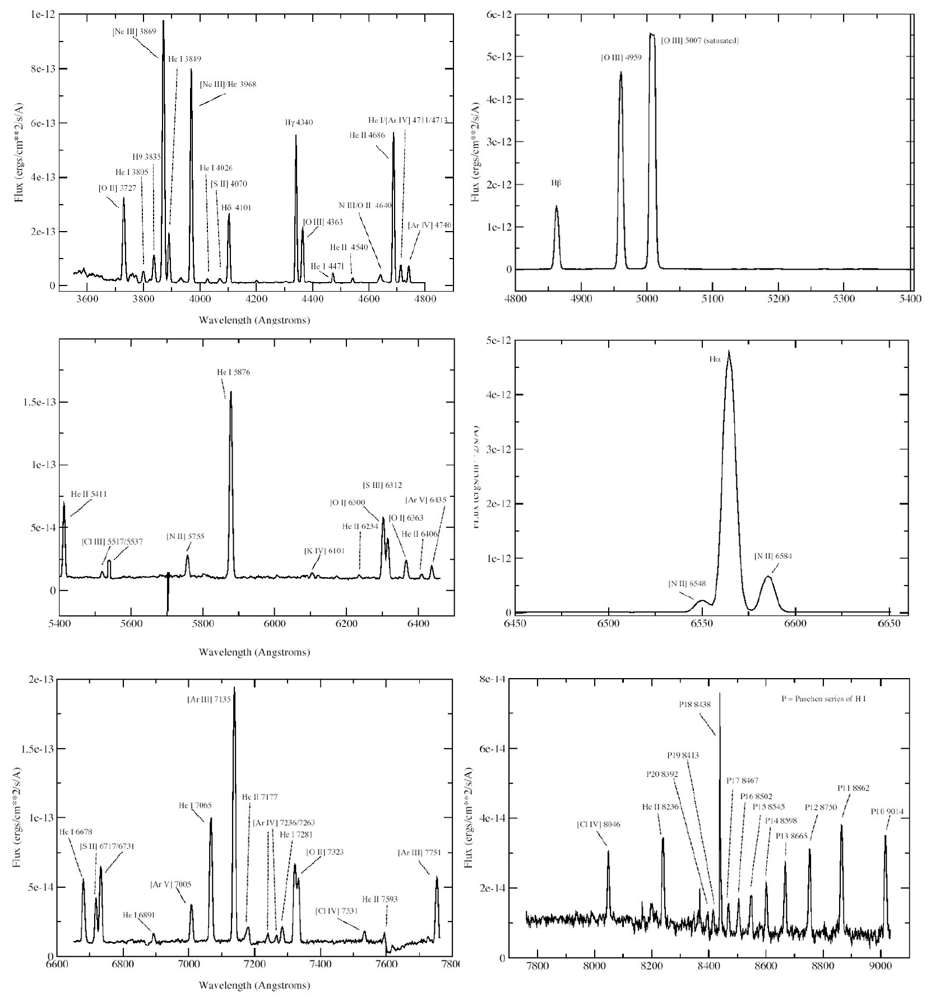
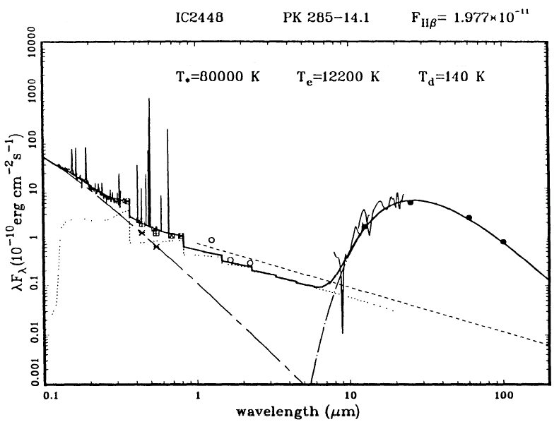

Introducción
Una Nebulosa Planetaria (NP) es una nebulosa de emisión que consiste en una envoltura brillante, en expansión, de gas ionizado eyectado de una gigante roja en su paso por la rama asintótica de gigantes (AGB) en el Diagrama HR. A pesar de su nombre, no tiene relación con planetas, salvo la comparación con los discos planetarios de los planetas gigantes, observada por William Herschel en el siglo 18. En escalas astronómicas, son un fenómeno de breve duración alcanzando las decenas de miles de años.

Nebulosas Planetarias de diversas formas observadas por el Hubble Space Telescope
Acercamiento Histórico
La primer nebulosa planetaria fue descubierta en 1764 por Charles Messier. En ese entonces, se clasificó como M27 en el catálogo de objetos difusos del propio Messier. En enero de 1779, Antoine Darquier reportó la Nebulosa del Anillo como “Nebulosa entre γ y β Lyrae; es muy opaca, pero perfectamente delineada; tan grande como Júpiter y se asemeja a un planeta que está desapareciendo” 1.
Unos años después, William Herschel construyó telescopios que excedían ampliamente las medidas de la época, aumentando la magnitud límite de sus observaciones. De esta manera, clasificó alrededor de 2500 objetos no estelares, dividiéndolos en categorías morfológicas. Una de ellas se llamó Nebulosas Planetarias, denominada así por la apariencia similar al disco difuminado de los planetas gigantes, probablemente influenciado por el reciente descubrimiento de Urano, por el mismo Herschel, en 1781. En esta categoría, había 79 objetos de los cuales 20 resultaron ser verdaderas NPs, por ejemplo el “Fantasma de Júpiter”, actualmente llamada NGC 3242, que Herschel descubrió en febrero de 1785 anotando “Hermosa, brillante, disco planetario mal definido, pero de brillo uniforme, la luz del color de Júpiter” 2.

Telescopios de 50 y 120cm de abertura construidos por William Herschel
En los años siguientes, las diversas observaciones principalmente de los Herschel (William y su hijo John), pero también de otros astrónomos, fueron aumentando notablemente el número de NPs en los catálogos, tanto del hemisferio norte como sur. Entre ellas se encontraba la NGC 1514, que en 1790, William la observó, escribiendo 3:
“Un fenómeno de lo más singular: una estrella de 8va magnitud con una débil atmósfera de forma circular, alrededor 3’ en diámetro. La estrella se encuentra perfectamente en el centro, y la atmósfera está tan diluida, débil e igualmente distribuida que no puede haber ninguna suposición de que este constituida de estrellas, ni puede haber ninguna duda de la evidente conexión entre la atmósfera y la estrella”.
Las distintas observaciones sistemáticas realizadas por los Herschel de distintas NPs con características similares, sumado a la escasa cantidad con respecto a otros objetos celestes, llevó a Williams a la siguiente conclusión 4:
“En primer lugar, si la nebulosidad consiste de estrellas que parecen difuminadas debido a su distancia, lo que hace que se superpongan entre ellas, ¿cuál debe ser el tamaño del cuerpo central que, a esa distancia enorme aún así eclipsa a todas las demás? En segundo lugar, si el cuerpo central no es más grande que lo común, ¿qué tan pequeños y comprimidos deben ser los otros puntos luminosos que nos envián solamente luz tan débil? En el caso formal, el cuerpo central podría exceder lo que llamamos una estrella, y por último la materia brillante alrededor del centro podría ser muy pequeña para entrar en esa definición. Entonces, o bien, tenemos un cuerpo central que no es una estrella, o una estrella envuelta en un fluido de una naturaleza totalmente desconocida para nosotros”.
Las diversas teorías sobre la naturaleza de las NPs formuladas hasta el momento fueron puestas a prueba cuando, en 1864, Williams Huggins observó el espectro de la Nebulosa Ojo de Gato (NGC 6543). En él vio una línea de emisión de gas a altas temperaturas, en contraposición con la emisión continua que se observaba en otros objetos difusos, como la galaxia Andrómeda. En su libro relata 5:
“Dirigí el telescopio por primera vez a la nebulosa planetaria en Draco... Miré en el espectroscopio. ¡El espectro no era como esperaba! ¡Sólo una única línea brillante! Al principio sospeché que se trataba de un desplazamiento del prisma... entonces se me ocurrió la verdadera interpretación. La luz de la nebulosa era monocromática... el enigma de las nebulosas estaba resuelto. La respuesta, que nos había llegado en la luz misma, decía: no hay una agrupación de estrellas, sino gas luminoso”.
Las observaciones espectroscópicas de NPs brillantes llevadas a cabo por Huggins, además de otros astrónomos como Secchi en 1867 y Herschel en 1868, evidenciaron la existencia de tres líneas de emisión. Una de ellas fue la línea de Balmer del Hidrógeno, en particular Hβ, y las otras dos, una de ellas muy brillante en 5007 Amstrong, no se podían identificar con ningún elemento conocido. Por eso, se propuso la existencia de un nuevo elemento, el nebulio. Luego de setenta años, y con la llegada de la mecánica cuántica, el misterio del elemento nebulio se resolvió. En 1928, Ira Sprague Bowen propuso que en densidades extremadamente bajas, los gases podían poblar los niveles de energía metaestables excitados. Las líneas producidas por la transición de Oxígeno dos veces ionizado a niveles de energía menores explicaban las líneas observadas en las NPs. Esta nueva teoría enterró la existencia del nebulio, deduciendo que las NPs están formadas por gas de muy baja densidad que emite en las líneas prohibidas.
Tanto las técnicas fotográficas que se desarrollaron en el siglo XX como las actuales observaciones con CCDs, aumentaron las detecciones de NPs, ampliando enormemente los catálogos. Además, las observaciones en distintas longitudes de onda realizadas principalmente por telescopios espaciales, permitió ampliar la información de estos objetos, tanto en temperatura, densidad o abundancias en los elementos. También, la resolución alcanzada por estos instrumentos permitieron observar sus estructuras complejas, dando más datos para conocer su formación y evolución.
Evolución de la Estrella Central
Si se realiza un análisis evolutivo de una estrella de masas bajas o intermedias (entre 0,8 y 8 Masas solares) sabremos que al final de su tiempo en la Secuencia Principal tendrá un núcleo inerte de Helio. Debido a que las reservas de Hidrógeno se están agotando, el núcleo se contrae bajo la gravedad y la temperatura aumenta, produciendo una expansión de las capas externas de la estrella. En este momento, el Hidrógeno de la estrella se sigue quemando en una envoltura alrededor del núcleo de Helio. Si observamos el Diagrama HR, la estrella sale de la secuencia principal y comienza a escalar la rama de Gigantes. Mientras la luminosidad crece aceleradamente, también lo hace la superficie de la estrella. Esto genera un enfriamiento de la superficie, a unos 3500 K aproximadamente. Estas capas externas están menos ligadas gravitacionalmente como consecuencia del incremento del radio. Ahora podemos decir que la estrella se encuentra formalmente en la rama de gigantes rojas (RGB).

Diagrama HR mostrando la evolución detallada de una estrella de 1 Masa solar
Si la estrella tiene una masa menor a 2 Masas solares, el núcleo de Helio se sigue contrayendo, incrementando su temperatura, densidad y degeneración. Cuando la temperatura es lo suficientemente alta, se produce un flash de Helio, quemando la mayoría de la materia degenerada e aumentando la luminosidad increíblemente. De esta manera, se restaura la normalidad del gas del núcleo regresando a su luminosidad normal. En el caso que quede materia degenerada en el núcleo, se requerirá más de un flash de He para restaurar la normalidad del gas. Eventualmente el núcleo de Helio se empieza a quemar de manera eficiente. Si la estrella tiene una masa mayor a 2 Masas solares, el núcleo se comienza a quemar de manera suave y sin flashes de Helio.
En ambos casos, tenemos una estrella con Helio en su núcleo quemándose y también una envoltura de Hidrógeno quemándose. Cuando el Helio se empieza a agotar, en la estrella encontraremos un núcleo con materiales mas pesados como Carbono y Oxígeno, mientras que la combustión de Helio se produce en cascarones alrededor del núcleo. En este momento, la estrella incrementa su luminosidad y se enfría, entrando en la rama asintótica de gigantes (AGB).
En esta etapa, las diversas capas de la estrella - núcleo de C y O, cascarónes de He y H - comienzan a interactuar debido a que la convección es el mecanismo dominante en la transmisión de calor. Esto genera transferencias de material entre las capas, apagando el cascarón de H como el de He debido al agotamiento del combustible en esté último, contracciones en la envoltura estelar y el reencendido del cascarón de H. Este proceso se puede repetir varias veces y es llamado "pulsos térmicos".
En la capas externas de la estrella se encuentra una envoltura de material no procesado. Al finalizar la etapa de AGB, se produce un fenómeno de perdida de masa llamado "superviento", que eyecta esas capas fuera de la estrella a unos 20km/s. La tasa de la pérdida de masa es del orden de 10-4 Masas solares por año, lo que hace disminuir rápidamente la masa de la estrella central. En este momento, al existir una envoltura externa que se aleja y la estrella que sigue perdiendo masa podemos llamar al sistema como una "Proto Nebulosa Planetaria".
La efectiva perdida de masa hace cesar el "superviento" generado en la estrella central y está comienza a contraerse a luminosidad bolumétrica constante. De esta manera, la temperatura superficial incrementa rápidamente hasta llegar a unos 20000-25000K, desplazándose al extremo izquierdo en el Diagrama HR. Además, esta temperatura produce una fuerte radiación ultravioleta que, por un lado, genera un viento de unos 200km/s sobre el cascarón externo y por el otro, lo ioniza. Esta ionización produce que el cascarón externo comience a brillar, teniendo formalmente el inicio de una NP.
Eventualmente, la luminosidad de la estrella central caerá unos ordenes de magnitud quedando en el Diagrama HR en la región de las Enanas Blancas y los vientos se aplacarán, obteniendo finalmente una velocidad típica de 20km/s de expansión. Posteriormente, la NP seguirá expandiéndose hasta decaer su brillo por debajo de los niveles de observación y se dispersara en el material interestelar.

Diagrama HR con logaritmos mostrando las zonas de evolución de una estrella de 2 Masas solares.
Espectros
Si consideramos a las NPs como un sistema constituido por la estrella central, la envoltura de gas ionizado y la cáscara de polvo podremos observar su distribución de energía, desde los rayos X hasta en radio. La emisión de la estrella central se puede comparar con la emisión de un cuerpo a temperaturas entre 30.000 y 200.000 K, mientras que la nebulosa ionizada emite principalmente por las transiciones ligado-ligado, libre-libre, un continuo de dos fotones y las lineas de emisión por la recombinación de iones exitados colisionalmente. Por otro lado, el cascarón de polvo emite en lo que se puede modelar como un continuo térmico de 100 K.
Si nos centramos en el espectro ocasionado por el gas ionizado, sabemos que las líneas de una nebulosa de baja densidad son generadas o por la captura de electrones realizada por los iones positivos o por la emisión espontánea posterior a la excitación colisional de un átomo o ion con generalmente un electrón. En las NPs, este último mecanismo es el más importante en la formación de líneas de elementos más pesados que el Helio, tanto que sus líneas suelen ser más intensas que las del Hidrógeno. Estas líneas pueden ser permitidas como prohibidas, aunque las últimas tienen una probabilidad de transición de 5 a 10 órdenes de magnitud menor que las permitidas.
A pesar de esto, son las líneas prohibidas las que dominan el espectro de una NP. El motivo principal es que en gases con densidades electrónicas tan bajas, las colisiones atómicas son poco probables, disminuyendo las posibilidades de la desexcitación de un átomo por medio de una colisión. Además, la radiación emitida por estas colisiones se encuentra en el rango del ultravioleta lejano, en cambio las configuraciones de los niveles fundamentales de la mayoría de los iones que generan las líneas prohibidas tienen poca diferencia de energía, generando radiación en el óptico y ultravioleta cercano siendo más fácil de observar.

Espectro sintético normalizado de una NP desde 3600 hasta 9000 Amstrong
Además la interacción entre electrones e iones de los elementos más abundantes (Hidrógeno y Helio) generan un continuo desde el ultravioleta lejano hasta radio. En particular, en el infrarrojo medio podemos detectar un aumento de la radiación emitida por la nebulosa. Esta radiación tiene su máximo en 40 µm y se debe a la emisión térmica del polvo.
Como caso particular, también se puede considerar la posibilidad de observar radiación emitida en rayos X, probablemente generada en la interacción del viento estelar proveniente de la estrella central con el medio interestelar.

Espectro de una NP (IC2448) entre 1250 Amstrongs y 100 micrones. 6
Resumiendo, todo lo que se ha hablado sobre NP se puede identificar en el espectro de arriba. La distribución de energía de esta NP esta generada por cada una de sus componentes (estrella, gas ionizado y polvo) y al estudiarla en una gran región del espectro electromagnético, podemos visualizar las relaciones entre la colaboración de energía de las emisiones de cada componente. En el gráfico podemos identificar:
- La curva cortada por guiones es la planckiana que modela el continuo estelar
- La curva de puntos es la emisión nebular
- La curva cortada por puntos es la emisión del polvo
- La línea de guiones indica el continuo de emisión por las transiciones libre-libre
- La línea solida es la suma de los modelos
Referencias
- Griffiths, M. “Planetary Nebulae and How to Observe Them”. Pág 1. (2012)
- Chen, J.; Chen, A. “A Guide to Hubble Space Telescope Objects”. Pág 99. (2015)
- Luby, T. “Elements of Plane Astronomy”. Pág 25. (1845)
- Pringle Nichol, J. “Views of the Architecture of the Heavens: In a Series of Letters to a Lady”. Pág 73. (1840)
- Huggins, W.; Miller, W.A. “On the Spectra of Some of the Nebulae”. Págs 437-444. (1864)
- Zhang, C.Y. "Energy Distribution of Planetary Nebulae (UV to Radio)". (1993)
Bibliografía
- Kaler, J. “Planetary Nebulae and their Central Stars”. (1985)
- Frew, D. "Planetary Nebulae in the Solar Neighbourhood". (2008)
- Weidmann, W. "Características Físicas Comparativas de Nebulosas Planetarias con Estrellas Centrales Ricas y Pobres en Hidrógeno". (2009)

Comments (0)